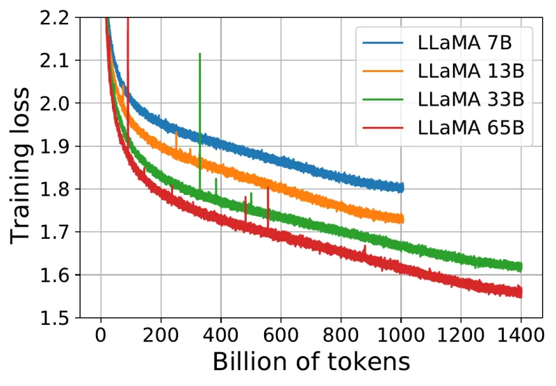

Each Meta model line is a deliberate trade of where a cost or a risk sits: Llama moved compute from serving into training (small models trained far past compute-optimal), Muse moved the frontier weights behind an API to get back to the frontier, and the Muse agent moves trust out of the model into machinery the model cannot talk its way past.
Four Llama generations in 26 months, a reorganisation, then the Muse line with open weights only at the edges
Open-weight releases on the top lane (filled dots), closed models and products on the bottom lane (rings), organisational events between them. Read along the top lane for the Llama cadence (four generations in 26 months, then nothing for 16 months); read down at mid 2025 to see the organisation change before the models do. Click a dot for its dated, sourced card in the release notes below.
You need: compute-optimal training (Chinchilla's 20 tokens per parameter) from Pretraining and total against active parameters from Mixture of experts. This page says what Meta chose and what it bought; those pages teach the mechanisms.
| Trade | What moved | What Meta got | What it cost |
|---|---|---|---|
| Overtraining (Llama 1 to 3) | compute from serving into training: Llama 3 8B on 15T tokens, 1,875 per parameter | a model about 9.7 times cheaper per served token than the compute-optimal model for the same budget | a higher loss than that budget could buy |
| MoE pivot (Llama 4) | stored parameters away from computed ones: 400B stored, 17B active | a 400B model sized for one 8-GPU host | a misfired launch; nothing newer shipped as Llama |
| Closed frontier (Muse) | the frontier weights behind an API | Muse Wonder Full, second on the Artificial Analysis index | the open identity, and the technical reports |
| Agent trust (Muse agent) | credentials and consent out of the model into separate services | a fooled model that can leak only placeholders | detection classifiers with no published accuracy |
A research-only release of 7B to 65B models trained only on publicly available data. The technical contribution was to take the Chinchilla result (for a fixed training budget the loss-optimal allocation is roughly 20 training tokens per parameter; Hoffmann et al.) and deliberately overshoot it: Chinchilla's objective "disregards the inference budget", and "a smaller one trained longer will ultimately be cheaper at inference"; where Chinchilla recommends a 10B model on 200B tokens, Meta found a 7B model still improving after 1T (LLaMA paper, and its own loss curves in the next section). The 7B and 13B saw 1.0T tokens and the 33B and 65B 1.4T, and the 13B beat GPT-3 (175B) on most benchmarks. That reframing, inference paid on every request forever while training is paid once, is why the 7B and 13B sizes exist at all and why nearly every open model since has been overtrained by Chinchilla's standard.
The weights leaked, and the leak created the local-LLM ecosystem, above all llama.cpp, a dependency-free C and C++ engine with aggressive weight quantisation that put 7B-class models on laptop CPUs (Ollama, llama.cpp, and local serving).
7B, 13B and 70B with a 4,096-token context (doubled from Llama 1's 2,048), the first openly licensed weights usable commercially, with chat variants tuned by rejection sampling and RLHF using PPO, and an unusually candid safety appendix (Llama 2 paper). The 70B used grouped-query attention, which Llama 3 then adopted at every size. The licence, more than the model, is what let a downstream fine-tuning industry form.
Dense 8B and 70B (April 2024), then the 405B with Llama 3.1 (July 2024), all on about 15T multilingual tokens with a 128K-token vocabulary and, from 3.1, a 128K-token context. The 405B saw 15.6T tokens and "delivers comparable quality to leading language models such as GPT-4 on a plethora of tasks"; it was deliberately kept dense rather than mixture-of-experts "to maximize training stability" (Llama 3 paper). The report itself became the field's most complete public account of how a frontier model is trained (what it disclosed).
Llama 3.3 70B (6 December 2024), the same shape as 3.1 70B, came close to 405B through post-training alone, including "over 25M synthetically generated examples", and so became the practical default in serving stacks that could not justify 405B's memory. Llama 3.2 (25 September 2024) added 11B and 90B vision models and 1B and 3B text models for devices, with 128K context (Meta).
The line moved to mixture of experts, so the parameters stored decouple from those each token computes with (Mixture of experts): in Maverick "MoE layers use 128 routed experts and a shared expert. Each token is sent to the shared expert and also to one of the 128 routed experts" (Llama 4 announcement). Scout is 109B total with 17B active across 16 experts, trained on about 40T tokens, with a claimed 10M-token context and, with Int4 weights, a fit on one H100; Maverick is 400B total with 17B active across 128 experts, about 22T tokens and a 1M-token context, sized for one 8-GPU H100 host (model card). The layer layout and the iRoPE design behind the context claim are in Inside Llama 4.
Reception was poor: the headline LMArena score came from a different checkpoint than the one shipped, and real-world coding quality lagged the published numbers badly; the episode cost Meta credibility it never recovered for the Llama line. Behemoth, the teacher with "288 billion active parameter[s] ... 16 experts" and "nearly two trillion total parameters" from which Maverick was codistilled while Behemoth was still training (Llama 4 announcement), never shipped.
MSL was formed on 30 June 2025 under Alexandr Wang, founder of Scale AI (the data-labelling company that supplied much of the industry's RLHF and evaluation data), with an aggressive hiring drive from rival labs. TBD Lab took over frontier model work and the open Llama roadmap stalled behind it.
Llama 3 8B was trained on 15T tokens: 15×1012 / 8×109 = 1,875 tokens per parameter, about 94 times Chinchilla's 20 (Llama 1 7B was at 1012 / 7×109 ≈ 143, about 7 times). Meta's own loss curves show why it kept going: the smallest model was still improving when the run stopped.

The argument is a cost one, with the names of Pretraining (which derives the Chinchilla rule):
Training is paid once and scales with ND; serving is paid on every token and scales with N alone. Shrinking N and growing D moves cost from the bill that recurs to the bill that does not.
The animation spends Llama 3 8B's training budget twice: as Meta did, and on the Chinchilla-optimal model for the same budget. Height is parameters, width is FLOPs per parameter (6 per training token, then 2 per served token), so area is compute, to scale in both modes. Predict before you press play: once both models have served 15T tokens, which total is smaller, and by how much?
The loss figures in the last step use Chinchilla's fitted loss law as refitted by Sardana et al. (the explorer below); they are illustrative, since the law was fitted to Chinchilla's data, not Meta's.
The arithmetic behind it: C = 6 × 8×109 × 15×1012 = 7.2×1023 FLOPs; the compute-optimal model for that budget is N* = √(7.2×1023/120) = √(6×1021) ≈ 7.75×1010, a 77.5B model on 20 × 77.5B = 1.55T tokens. Per served token the 8B costs 2 × 8×109 = 1.6×1010 FLOPs and the 77.5B 1.55×1011, a ratio of about 9.7. So the same training budget buys either the lower-loss 77.5B or an 8B nearly ten times cheaper on every token it ever serves; Meta chose the second, because the 8B is good enough for most deployments and runs on one GPU. Serving 15T tokens costs the 8B 2 × 8×109 × 15×1012 = 2.4×1023 FLOPs, a third of its training compute; the bet pays more the more the model is used.
The flagship is the counter-case. The 405B on 15.6T tokens is at 15.6×1012 / 405×109 ≈ 38.5 tokens per parameter, close to compute-optimal, and 6 × 405×109 × 15.6×1012 = 3.79×1025 FLOPs reproduces the report's 3.8×1025 (Llama 3 paper). Meta's own fitted scaling law, run on that budget, predicted "a 402B parameter model on 16.55T tokens" (about 41 tokens per parameter), and Meta trained 405B. The overtraining was in the small models, the ones served at volume; the largest was sized to the budget.
Chinchilla's answer counts training only. Fix the loss you need, then pick the N and D on the curve of equal loss that minimise 6ND + 2NT over a lifetime of T served tokens (Sardana et al.). Predict first: for Llama 3 8B's quality, how many served tokens make 1,875 tokens per parameter the cheapest choice? Then choose "Llama 3 8B on 15T" and slide T.
Counting serving moves the cheapest point to a smaller model trained longer
The optimum moves with demand
Optimal tokens per parameter against lifetime tokens served, for the quality chosen above, under each fitted law; Meta's actual ratio is the dashed line.
Under Hoffmann's law Meta's 1,875 tokens per parameter is the optimum only for a lifetime around 1014 served tokens. Switch to the Epoch fit and the same loss is reached sooner, so the optimum moves. Sardana et al. also trained models up to 10,000 tokens per parameter and found the law overestimates the gain from extra data at such extreme ratios, so read the far right as an upper bound on the benefit.
Loss values from a law fitted to Chinchilla's data are illustrative for Meta's models, which used other data and tokenizers; the explorer compares shapes, not Llama's loss. Fits: Hoffmann et al. 2022; Sardana et al. (α = 0.336, β = 0.283, after De Vries); Besiroglu et al. 2024 (precise Hoffmann values and Epoch's refit). The defaults reproduce Sardana et al.'s Table 2 independently (5T served, loss 1.96: the training-only optimum 30B on 1.56T against the serving-aware 16.4B on 3.27T, a 16% saving). Hoffmann's own fit implies about 70 tokens per parameter at the training optimum; Epoch's refit about 20, matching how Chinchilla itself was trained. The fits themselves are refitted on the Chinchilla paper page.
The Llama 3 report still matters more than the model: it is the most complete public end-to-end account of training a frontier-class model, and it maps onto the stack a practitioner already runs. The paper page owns the details and rebuilds its tables and its 16K-GPU job (The Llama 3 Herd of Models); here is what each part chose, every figure from the Llama 3 paper.
| Part | Meta's choice and the number that matters | Mechanism taught on |
|---|---|---|
| Data and annealing | a 15T-token mix of roughly 50% general knowledge, 25% mathematics and reasoning, 17% code and 8% multilingual; annealing (learning rate decayed linearly to zero over the last 40M tokens while high-quality code and maths are upsampled) raised the 8B's GSM8K and MATH validation scores by 24.0% and 6.4% and did almost nothing for the 405B. Also a cheap data test: anneal a 50%-trained 8B on 40B tokens that include a candidate dataset and see whether it helps. | Pretraining |
| Scaling laws | run before the main run rather than guessed: IsoFLOPs curves between 6×1018 and 1022 FLOPs, a parabola fitted at each budget, the minimums extrapolated to the flagship's budget (the 402B-on-16.55T prediction above) | Pretraining |
| 4D parallelism | tensor, context, pipeline and data parallelism (data as FSDP) on one device mesh over 16K H100 GPUs, at 38% to 43% model FLOPs utilisation in BF16 | Distributed Training; the three meshes of Table 4 on the paper page |
| Post-training without PPO | rounds of rejection sampling (typically 10 to 30 samples per prompt, the best kept by a reward model), SFT and DPO (learning rate 10−5, β = 0.1); Meta "explored on-policy algorithms such as PPO, but found that DPO required less compute for large-scale models and performed better" | Alignment: SFT, RLHF, DPO Family, RLVR |
| Failure at scale | 466 interruptions in a 54-day snapshot: 47 planned (firmware, configuration or dataset updates) and 419 unexpected, about 78% of those confirmed or suspected hardware; still more than 90% effective training time through checkpointing and automated restarts | the paper page's rebuilt Table 5 |
| Long context | 8K to 128K tokens in six stages over about 800B tokens at the end of pretraining, each stage moving on once short-context performance had recovered and needle-in-a-haystack retrieval was solved at that length | Long context |
A pretraining mixture of "more than 30 trillion tokens" of text, image and video across 200 languages (the model card gives about 40T tokens for Scout and 22T for Maverick); what Meta calls early fusion, image tokens from a MetaCLIP-based vision encoder entering the same backbone as text from the first layer, though the encoder itself was trained separately (Native multimodal and any-to-any models sorts out what "early fusion" means in different documents); FP8 pretraining, which for Behemoth on 32K GPUs reached 390 TFLOPs per GPU (Quantization and Precision); MetaP, Meta's method for reliably setting "critical model hyper-parameters such as per-layer learning rates" and initialisation scales so that they transfer across batch size, width, depth and token count; codistillation of Maverick from Behemoth; and iRoPE for the extreme context claim (Llama 4 announcement).
MSL-era training details are mostly undisclosed. Muse Spark and its successors have no technical report, the concrete cost of the closed pivot for anyone who used Meta's reports as the field's reference documentation. The one MSL report is for the small open model: Muse Glimmer's model card gave the outline (logit distillation from Muse Spark, agent-focused mid-training, SFT and RL) and the full architecture (model card, VentureBeat), and a 329-author technical report followed on arXiv in October 2026 (arXiv 2610.24628).
Both models have 48 layers of width 5,120 with 40 query heads sharing 8 key-value heads of 128 dimensions. Scout puts an MoE block in every layer (16 experts plus the shared one); Maverick alternates: odd layers are MoE with 128 experts plus the shared one, even layers are dense with a feed-forward block twice an expert's width (Scout config, Maverick config, read from Unsloth's mirrors because Meta's repositories are gated). So "alternates dense and MoE layers" is true of Maverick only. Each token computes with the attention of all 48 layers plus two expert-sized blocks per layer (the shared expert and one routed one, or the dense block of the same total width), which is why both are 17B active while storing 109B and 400B (rebuilt from the config below, Maverick comes to 400.7B and 17.2B, independently of Meta's rounded figures).
The context claim rests on iRoPE (interleaved RoPE): three layers in four use rotary embeddings and attend only within chunks of 8,192 tokens; every fourth layer has no positional encoding and attends to the whole context, so it is length-agnostic by construction. Those global layers also scale their queries by a temperature that grows with position, the "inference time temperature scaling of attention" of the announcement (Llama 4 announcement); in Hugging Face's implementation the factor is 1 + 0.1 ln(1 + ⌊(p+1)/8192⌋) at position p, after Nakanishi's scalable softmax (code), so the softmax stays sharp over millions of keys. RoPE, NoPE layers and Llama 4's config fields are taught on Positional Encodings. Move the position and watch which layers' caches keep growing.
Only one layer in four keeps the whole context; Maverick alternates MoE and dense, Scout is MoE throughout
The cache that grows with context therefore belongs to 12 global layers only, a quarter of a dense design's (sizes against context for every model are in the KV-cache calculator on Long context; weights plus cache against your GPU on the Parameters and fit tab). A claimed window is still not demonstrated quality at that length.
The first MSL frontier model, code-named Avocado, built over about nine months on what Wang called an AI stack "rebuilt from scratch" rather than on the Llama architecture: natively multimodal, with tool use and multi-agent orchestration built in (Verdent). Weights were closed and there was no public API at launch, only the Meta AI apps and a private API preview. It returned Meta to frontier-competitive performance (52 on the Artificial Analysis Intelligence Index as it stood in April 2026, against Llama 4 Maverick's 18; VentureBeat) at the cost of the open identity that was its entire strategic differentiation: Meta's argument for releasing weights had always been that commoditising the model layer was worth more to it than owning one. Versions 1.1 to 1.3 added a paid API, the Muse Code agent and a 1M-token context; their dates and prices are in the lineup.
Muse Spark 1.3's claim worth testing is agentic efficiency rather than raw score: "~20% fewer tool calls and ~25% fewer tokens" than Muse Spark 1.2 for the same work, the metric that decides agent economics once capability is close (Meta).
Meta's first open-weights release since Llama 4: a 29.6B dense multimodal model (text and interleaved images in, text out, with a ViT-G/14 perception encoder of about 1.8B parameters) of 52 layers with a context of 131,072 tokens, under Apache 2.0, which drops the Llama licence's 700-million-user clause (model card, VentureBeat). The recipe in outline: distilled from Muse Spark (by logit distillation), mid-trained on longer-context, agent-focused data, then SFT and RL (VentureBeat; the method is on Distillation and Small Language Models). Its attention repeats Llama 4's pattern in a new form: three local layers with a 2,048-token sliding window and RoPE, then one global layer without positional encoding, with 32 query heads sharing 2 key-value heads (model card).
One repeating unit of four layers: Glimmer keeps Llama 4's three-local-one-global rhythm with a shorter window and a quarter of the KV heads
Read from the configs (Llama 3.1 8B, Maverick, Muse Glimmer). Only the global layers keep keys and values for the whole context: 12 of 48 in Llama 4, 13 of 52 in Glimmer, every layer in Llama 3. The windows and head counts are what the configs say; what each costs in memory against context is the KV-cache calculator on Long context.
It is built for local, always-on agent work: a 17 GB roughly 4-bit build fits a 24 GB consumer GPU, and a speculative-decoding drafter triples throughput on an RTX 5090 (model card).
The first model TechCrunch and Meta both call frontier rather than frontier-band, trained at Meta's gigawatt-scale Prometheus data centre and pitched on "Active Memory" for personal and professional agents (Meta, TechCrunch). It comes in two forms, and the split is the design choice: Muse Wonder is on the Meta Model API; Wonder Full, the stronger configuration, is not on the API at all and comes only with Muse Code subscriptions. Neither has published weights (VentureBeat). So the API buys a model a few points under the frontier; the frontier score itself is sold only inside Meta's own coding agent.
Meta published the weights it had promised since August under a new name rather than a version number: an 816B-total, 42B-active MoE transformer with a 1M-token context, natively multimodal through a 1.8B Perception Encoder (Meta). The card: 62 layers, hidden size 8,192, 256 experts with 8 active per token, grouped-query attention with 128 query and 16 key-value heads of dimension 64, gated attention and QK-norm, a 202,048-token vocabulary. The NVFP4 build fits one 8-GPU H200 host; BF16 needs two.
The Muse Model License is not Apache 2.0: model-as-a-service operators with more than $20 million of gross revenue in any 12 months need a separate agreement with Meta, and products must show a "Built with Muse Spark Open" notice (model card). Meta's own card puts it below the Chinese open frontier: GLM 5.3 at 45, Kimi K3 at 44 and Qwen3.8-2.4T at 40 on the Artificial Analysis index, and 76.4 on Terminal-Bench 2.1 against 83.9 to 85.0 for those models. "Best US open-weight model" is Meta's claim; on the aggregate index it is the largest US open model, not the best open one.
The Meta Muse agent (8 September 2026) is a general assistant on iOS, Android and the web in the US, usable "in the Muse app or directly in WhatsApp", that sends email, books, fills forms and pays on the user's behalf, running on Muse Spark, with each user's agent in "Muse Secure VM, a dedicated, virtual machine (VM) that houses both the agent and a person's data"; basic use is free, with paid tiers (Meta). On Meta's third-quarter call (21 October 2026) Zuckerberg said "more than 10 million people in the US and Canada" had set it up, about a quarter of them using it daily, and that it has not launched globally because it is compute-intensive (call transcript). It is the most substantive thing MSL has shipped, and the security architecture rather than the assistant is why. It holds standing access to mail, payments and accounts while reading attacker-controllable pages and messages, the worst case for prompt injection (instructions hidden in content the agent reads). Meta's design assumes the model will sometimes be fooled and makes being fooled grant nothing that matters. Predict before you step through: the injection fools the model in both designs, so what is left for the attacker in each?
One injected page through a naive agent that holds real credentials and sends whatever it composes, and through Muse's design. The task, the injected page and the attacker's address are illustrative; the components and rules are Meta's. Meta publishes no example attack.
The six parts, from Meta's own description of 8 September 2026 (Meta):
hatch-authd holds credentials, privsep workers run connector code, hatch-safety runs classifiers the cell cannot switch off, and Sentinel is the sole permission authority for connector actions and network egress.systemd-nspawn container inside the user's VM, with "root inside the runtime cell ... mapped to an unprivileged host user", its own filesystem and virtual network interface, filtered system calls (no io_uring) and limited kernel capabilities (no CAP_SYS_PTRACE, no CAP_NET_ADMIN).hatch-authd stores credentials (including OAuth tokens for third-party services), privsep workers run the built-in connector code with tightly scoped credential access, hatch-safety runs independent classifier models over requests and responses so that an attacker inside the cell cannot switch them off, and Sentinel is "the sole permission authority" for connector actions and network egress. The cell reaches them only over Unix domain sockets with kernel-authenticated peer checks.What is not covered: Meta offers "up to $300,000 for valid reports ... including up to $130,000 for successful prompt injection attempts that affect one user", and has published no accuracy figures for its classifiers, so the parts that still rest on detection are unmeasured (Meta). The boundary also covers only the cloud VM: on 22 September 2026 the researcher Patrick Wardle disclosed that malware already running under the user's account could change an undocumented macOS setting and redirect the Muse Mac client's dictation traffic, with its prompts and authentication data, to a server of its choosing (Cybersecurity News); that report gives no patch, and the fix "four days later" recorded earlier is unconfirmed in the sources read here. The general principle, that enforcement and credentials belong outside the component that can be persuaded, is developed on Agent security and Topic: agentic-harnesses, and the comparison with self-hosted personal agents on Personal agents: OpenClaw, Hermes Agent, and how they differ from coding harnesses.
Volatile: prices are list prices per million input / output tokens; scores are the Artificial Analysis Intelligence Index v4.3 (methodology v4.3.2) and its cost per index task, read 1 October 2026 (19 October for Muse Wonder and Muse Spark Open) (Artificial Analysis). The cross-provider picture is on Topic: llm-landscape.
| Model (release) | Weights and licence | Price | Index v4.3 | $ per task | Where |
|---|---|---|---|---|---|
| Muse Wonder Full (12 Oct 2026) | Closed | only in Muse Code, $50 or $200 a month | 56 | none | Meta's frontier model (VentureBeat) |
| Muse Wonder (12 Oct 2026) | Closed | $4 / $20 ($0.20 cached) | 52 | 4.52 | Meta Model API as muse-wonder-1.0; about 1M context; text, image, audio and video in |
| Muse Spark Open (15 Oct 2026) | Open, Muse Model License | self-hosted | 39 | 0.84 | 816B total, 42B active; NVFP4 at least 700 GB (Artificial Analysis) |
| Muse Spark 1.3 (2 Sep 2026) | Closed | $1.25 / $4.25 ($0.15 cached) | 45.1 xhigh, 48.1 max | 1.37, 1.60 | Meta AI products, first-party API, Muse Code; 1M context; text, image and video in (AA) |
| Muse Spark 1.2 (5 Aug 2026) | Closed (its promised weights never shipped under that name) | $1.25 / $4.25 | about 57 on the index of the time | shipped with Muse Code; superseded by 1.3 at the same price (Codersera, Wikipedia) | |
| Muse Spark 1.1 (9 Jul 2026) | Closed | first paid API | Meta's first paid, OpenAI-compatible API (Codersera) | ||
| Muse Glimmer 30B (10 Aug 2026) | Open, Apache 2.0 | self-hosted or third-party hosts | 17.5 | 0.06 | dense, 131K context, one 24 GB GPU with the 17 GB build (Artificial Analysis) |
| Meta Muse agent (8 Sep 2026) | Hosted product | basic use free, paid tiers | US iOS, Android, web and WhatsApp; per-user VM, surrogate credentials, Sentinel egress control | ||
| Llama 4 Scout and Maverick | Open, Llama 4 Community License | self-hosted | the last Llama release; still widely served | ||
| Llama 3.x | Open, Llama 3 Community Licenses (3.1, 3.2 and 3.3 each have their own) | self-hosted | legacy, and still a default base in many fine-tuning stacks |
Strategic read. Llama's retreat handed open-weights leadership to the Chinese labs and to Mistral, and it was a retreat from the open frontier only; October 2026 settled both halves. Muse Wonder Full put Meta at the closed frontier (second on the Artificial Analysis index), though only inside its own coding agent. Muse Spark Open put Meta back into large open weights, but not at the open frontier: at 39 it sits six or seven points below the Chinese leaders (Xiaomi's MiMo, DeepSeek, Zhipu's GLM, Moonshot's Kimi), under a licence with a revenue clause. So the open frontier stayed where it was; Meta's open contribution is size and US provenance, not rank. Llama 3.1 and 3.3 remain default bases in many fine-tuning stacks purely through incumbency: tooling, LoRA adapters, quantised builds and tribal knowledge accumulated around them, and that inertia outlives the quality argument.
Muse Code is Meta's terminal and CI (continuous integration) coding agent, with sandbox-and-approval defaults, that can run several sub-agents at once; Wikipedia adds that 1.2 was served through the Meta Model API and OpenRouter, with a cheaper contributor tier under which Meta keeps the submitted data (Wikipedia). The image model code-named Mango shipped quietly in early July 2026 as Muse Image (The Agent Report), and on 1 September Muse Voice Transcribe, streaming speech recognition with speaker identification, covering more than 70 languages with 25 extensively validated at launch (9to5Mac).
Artificial Analysis changed its Intelligence Index twice after Muse Spark 1.3 shipped: v4.2 on 4 September 2026 (GPQA Diamond removed) and v4.3 on 7 September (Terminal-Bench moved from 2.1 to 4.0, τ³-Banking replaced by AutomationBench-AA, private tests weighted 45% instead of 40%), with a methodology update to v4.3.2 on 19 September (Artificial Analysis, read 1 October 2026). A number from one version never compares with another.
At release Artificial Analysis scored Muse Spark 1.3 61 at xhigh reasoning and 62 at a max tier available only in limited preview; only Anthropic models scored higher (Claude Fable 5.1 at 66, Opus 5 at 63; Fable 5 tied at 62), and at 61 it tied GPT-5.6 Sol (max) and Grok 4.6 (high); at $0.55 per index task it was the cheapest model scoring 59 or above on that scale (Artificial Analysis, 2 September 2026). Those are on the scale before v4.2. The "cheapest at its level" point does not survive the rescaling: on v4.3 GPT-6.1 Sol (max) scores 51.8 at $0.72 a task, above Muse Spark 1.3 (xhigh) and cheaper per task. Weights are closed, it is served only through Meta's first-party API and Muse Code, and the top number comes from a max tier developers cannot broadly use.
Muse Spark 1.3's best run (48.1) left Meta fourth among labs by each lab's best model, behind Anthropic (57.6), OpenAI (52.7) and Google DeepMind (52.6) on the 1 October reading, derived from the same leaderboard. Muse Wonder Full moved Meta to second: on the 19 October reading it scores 56, behind only Anthropic's Opus 5.5 (58) and level with Sonnet 5.5, ahead of Moonshot's Kimi K3.1 Pro (55, read 26 October) and OpenAI's and Google's best (53 each); Wonder costs $4.52 per index task against Opus 5.5's $5.98 and GPT-6 Astra's $3.26 (VentureBeat, read 19 October 2026). In open weights, Muse Glimmer (17.5 for $0.06 a task) sits in the small-model cluster and Muse Spark Open (39 at $0.84) below the open frontier, where Xiaomi's MiMo-V2.6-Pro leads at 46 and DeepSeek V4.1-Flash-1017 and GLM 5.3 follow at 45 (read 19 October 2026). Glimmer's price is Artificial Analysis's median across third-party hosts; Muse Spark's is Meta's API.
Whether a model fits your GPU, with its context, is on Parameters and fit.
"Llama 4 has a usable 10M-token context." That is Scout's claimed limit, resting on iRoPE and attention temperature scaling; a claimed window is not demonstrated quality at that length, and Maverick's limit is 1M. It is also not a single-GPU figure: even with only the 12 global layers growing, Scout's cache at 10M tokens is about 481 GiB in BF16 (derived from the configuration on Parameters and fit), six H100s' worth before any weights.
"17B active means 17B of memory." Active parameters set the compute per token; all 109B or 400B parameters must still be stored. Scout fits one H100 only with Int4 weights (109B at half a byte is about 54.5 GB).
"Llama is open source." The Llama licences restrict very large users and are Meta's own terms. Muse Glimmer's Apache 2.0 is the first Meta licence that is open source in the usual sense.
"Meta overtrained its flagship." The 405B sat close to compute-optimal at about 38.5 tokens per parameter; the heavy overtraining was in the 8B and 70B (about 1,875 and 214 tokens per parameter), which are the ones served at volume.
"The 1417 LMArena score was Maverick's." It belonged to an unreleased experimental checkpoint tuned for chat preference.
"Muse Spark 1.3's 61 compares with today's index numbers." The 61 and 62 are on the scale the index used at release, before v4.2. On the current v4.3 the same model is 45.1 at xhigh and 48.1 at max, the figures to set beside other v4.3 scores.
"Muse Spark Open is Muse Spark 1.3 with its weights published." Meta labels the release "Muse Spark Open", not any numbered version, and publishes no mapping to 1.2 or 1.3; its index score (39) is below 1.3's 45.1 to 48.1, so do not assume the hosted and open models are the same checkpoint.
"The Muse agent cannot be prompt-injected." It can; the design limits what a successful injection achieves. The classifiers that still catch some attacks are unmeasured in public, and the Mac client sat outside the VM boundary.
"Chinchilla says train 20 tokens per parameter, full stop." The 20 is the training-only optimum, and even that depends on whose fit you use: Hoffmann et al.'s own fitted law implies about 70 tokens per parameter, Epoch's replication about 20 (Besiroglu et al.). Once serving is counted the optimum moves far higher; see the explorer.
Every open Meta model's parameter count rebuilt from its config.json, then weights plus key-value cache against the memory you have. Weights are parameters times bytes per parameter; the cache is 2 × layers × KV heads × head size × bytes per token for each layer that keeps the whole context, and a fixed window's worth for each local layer.
Weights at the precision chosen above, cache at the context chosen above, on the hardware chosen above.
Assumptions: half a byte per parameter for Int4 ignores the scales and the layers a real 4-bit build keeps at higher precision, so real files are a little larger (Glimmer's 4-bit build is 17 GB against the 14.8 GB computed here); the cache is BF16; activations, the vision encoder's work and framework overhead are not counted. Glimmer's 29.6B is reproduced only if its gated attention adds one gate matrix the size of the query projection per layer, an assumption: the card says "Gated attention: Yes" without the shape. Configs: Llama 3.1 8B, 70B, 405B, Scout, Maverick (Unsloth mirrors of Meta's gated repositories), Muse Glimmer.
Where Meta sits in the whole provider map, and the open-weights contest it left.
The MoE mechanism, and Llama 4's configurations next to the sparse models that outcompeted them.
The Chinchilla scaling law and compute allocation behind the overtraining bet.
The full summary of the Llama 3 report, with its tables rebuilt, the 16K-GPU job and the scaling-law forecast refitted.
DPO, PPO and the rest of the post-training methods Llama 2 and 3 used.
The parallelism forms (TP, CP, PP, FSDP) that Llama 3's 4D mesh composes; the PyTorch API is on Distributed PyTorch: DDP, FSDP2, DTensor, and friends.
The paper behind the 20 tokens per parameter, its fits refitted, and Sardana et al.'s inference-aware answer.
KV-cache sizing for every family against context, including Llama 4's local and global layers.
Permissions, sandboxes, prompt injection and egress control in general, the principles the Muse agent applies.
llama.cpp, the engine the Llama 1 leak created, and running Llama or Glimmer locally.
RoPE and NoPE, the two ingredients of Llama 4's iRoPE.
Early against late fusion, and what Llama 4's "early fusion" means given its separately trained vision encoder.
FP8 training and the 4-bit formats behind Scout's one-GPU fit and Glimmer's 17 GB build.
The Muse agent's security principle in the wider harness landscape, Muse Code among the vendor CLIs, and Real-SWE.
Self-hosted personal agents and their security problems, against which the Muse design reads.
DeepSeek, Alibaba: Qwen, Mistral AI: how each one's open models differ from Llama's.
One of the most detailed frontier training reports ever published, and still the reference for dense-at-scale. 90-plus pages; the pretraining-infrastructure and post-training sections transfer directly to your own runs. Read with the knowledge base's summary above.
Scout and Maverick architecture details, including the MoE configuration and the long-context claim.
The closed-source pivot and what it means for the open ecosystem.
The context in which Meta Superintelligence Labs was formed.
Meta's primary description of the runtime cell, Sentinel and surrogate credentials.
The inference-budget argument for overtraining in Meta's own words.
The one MSL-era report: the 30B multimodal model, its distillation and agentic post-training, and Meta's comparisons at its size.
Specifications, quantised builds and Meta's own benchmark table.
The full architecture table, quantisation results, the DFlash drafter, the benchmark table with Gemma 4 and Qwen3.6, and the preparedness assessment.
The inference-aware scaling law behind the overtraining explorer, and its experiments up to 10,000 tokens per parameter.
Current v4.3 score, cost per task, speed and token use; the release-day article is here.
Sources were read between 1 and 19 October 2026. Artificial Analysis figures are Intelligence Index v4.3 (methodology 4.3.2) unless labelled as release-time. Configuration files of gated Meta repositories were read from Unsloth's public mirrors.